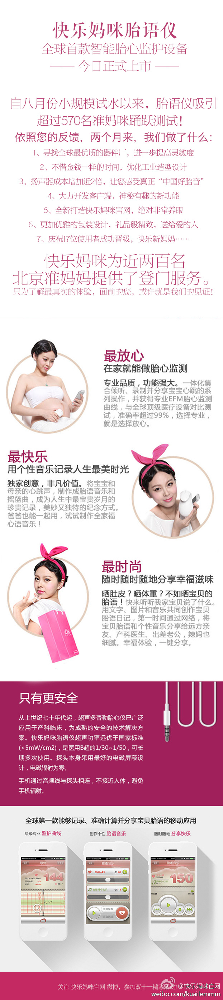

今天雾霾，@CTO俱乐部 健步走活动走了五公里，大家建议活动放到周日上午，下周试行。

Ada李力
2013-11-09


Ada李力
2013-11-09
很精美的仪器。 //@陶建辉快乐妈咪:送给准妈妈的最好礼物，不仅能带来安心，更能带来快乐！谢谢团队的努力，让第二批产品得以完美呈现，市场销售可以正式启动。
//@陶建辉快乐妈咪:送给准妈妈的最好礼物，不仅能带来安心，更能带来快乐！谢谢团队的努力，让第二批产品得以完美呈现，市场销售可以正式启动。
@快乐妈咪PCbaby:
全球首款智能胎语仪正式上市！快乐妈咪自八月试水至今，吸引超过570名准妈妈参与测试，根据反馈，将设计和体验不断完善；并在此期间，完成网站改版、客户端升级，优选了更高水准的器件供应商。其中，快乐妈咪团队为近两百名北京地区准妈妈，提供了登门服务。关注@快乐妈咪官网 ，参与双十一精彩活动！
- 


Ada李力
2013-11-09
这是在夸俺啰。 //@StephanieYR:其实现在真心觉得知道自己要什么的人是幸福的，在这种人身边也是幸福的。原来真觉得自己高人一等，现在明白这样的女孩子在现实生活中不仅自己高兴，男人和她过日子也舒心。
//@StephanieYR:其实现在真心觉得知道自己要什么的人是幸福的，在这种人身边也是幸福的。原来真觉得自己高人一等，现在明白这样的女孩子在现实生活中不仅自己高兴，男人和她过日子也舒心。
Ada李力
2013-11-09
Ada李力
2013-11-09
今天微博抽风了? 被足球比赛刷屏了，我关注的人都是球迷？想想也释然，IT圈几乎全是大老爷们。